MIT Gala
MIT
2023-2025
2023-2025
Graphic Design, Branding
As the design director of MIT Gala, our undergraduate design and fashion collective, I'm responsible for establishing and maintaining a cohesive branding identity each year.
Additionally, I create all of the marketing material and event signage for our titular fashion show in the spring, usually
attended by 300+ community members and featuring 50+ student designers.
Below, I will focus on two projects I worked on in this role that I'm especially proud of:
Design Prompt 1: Design a program for the 2025 MIT Gala show, following the event theme of "WATER."
Incorporate short descriptions and pictures for 50+ pieces.
For this project, I had two primary design goals in mind:
l Successfully convey and condense all the information about the pieces.
q Incorporate graphic pages that people could rip out and use as art prints afterwards. With the aim of avoiding waste and increasing event memorability, I wanted to try and give the program additional life beyond just the day of the show.
l Successfully convey and condense all the information about the pieces.
q Incorporate graphic pages that people could rip out and use as art prints afterwards. With the aim of avoiding waste and increasing event memorability, I wanted to try and give the program additional life beyond just the day of the show.
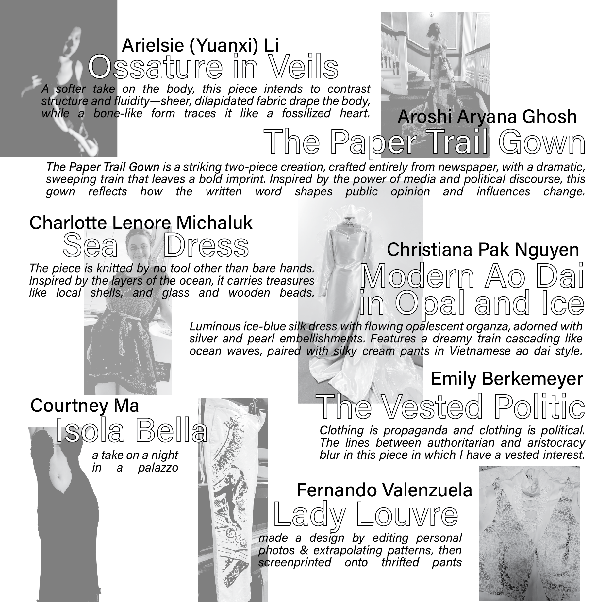
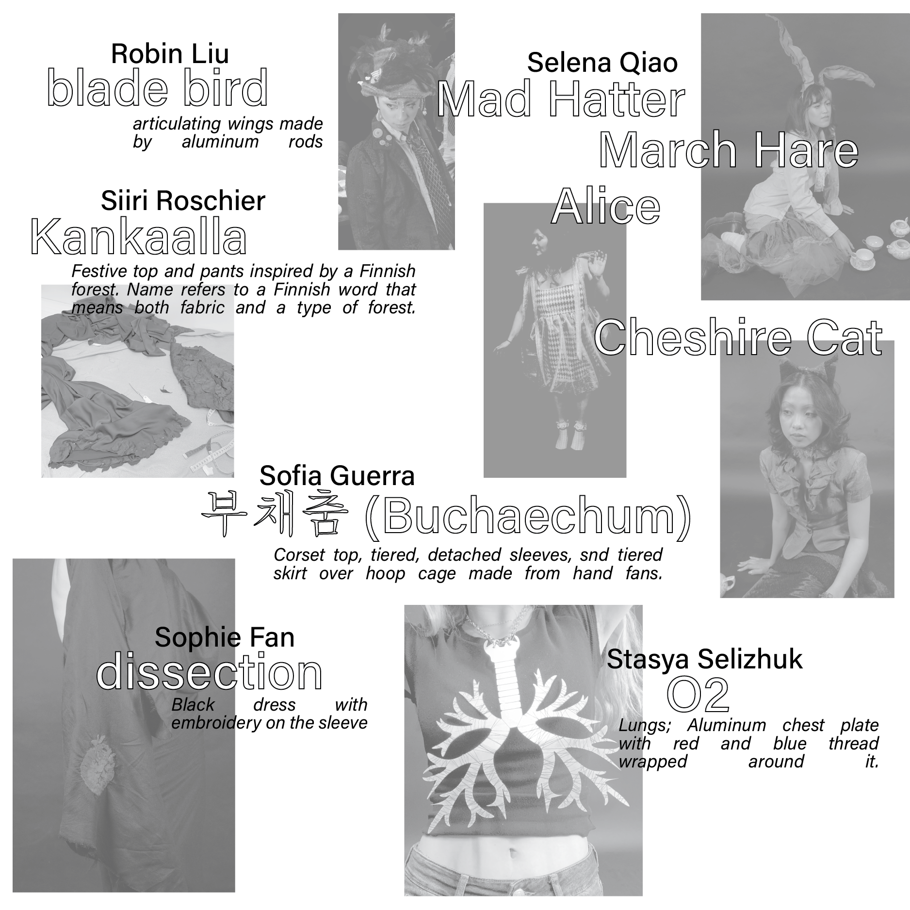
I started by tackling the pages that would hold all of the piece information.
Immediately, I realized that there was a high amount of variation in the media corresponding to each piece: not all of the designers provided images and descriptions, and of those who did, the quality varied wildly.
To get around this issue and establish a level of visual cohesion, I made all of the images black and white, lowered their opacity, and used a digital collaging aesthetic to piece together the text and photos.
<-- examples
To get around this issue and establish a level of visual cohesion, I made all of the images black and white, lowered their opacity, and used a digital collaging aesthetic to piece together the text and photos.
<-- examples
Next, I laid out the front and back covers and the corresponding inner pages.
In designing the covers, I had to consider the additional requirement of branding alignment with the rest of the event signage, as the programs would be
laid out physically next to the printed banners and posters.
Thus, I adopted a simpler design aesthetic for the cover pages, using the same colors and fonts as I did on the wayfinding signs for the event:
Thus, I adopted a simpler design aesthetic for the cover pages, using the same colors and fonts as I did on the wayfinding signs for the event:
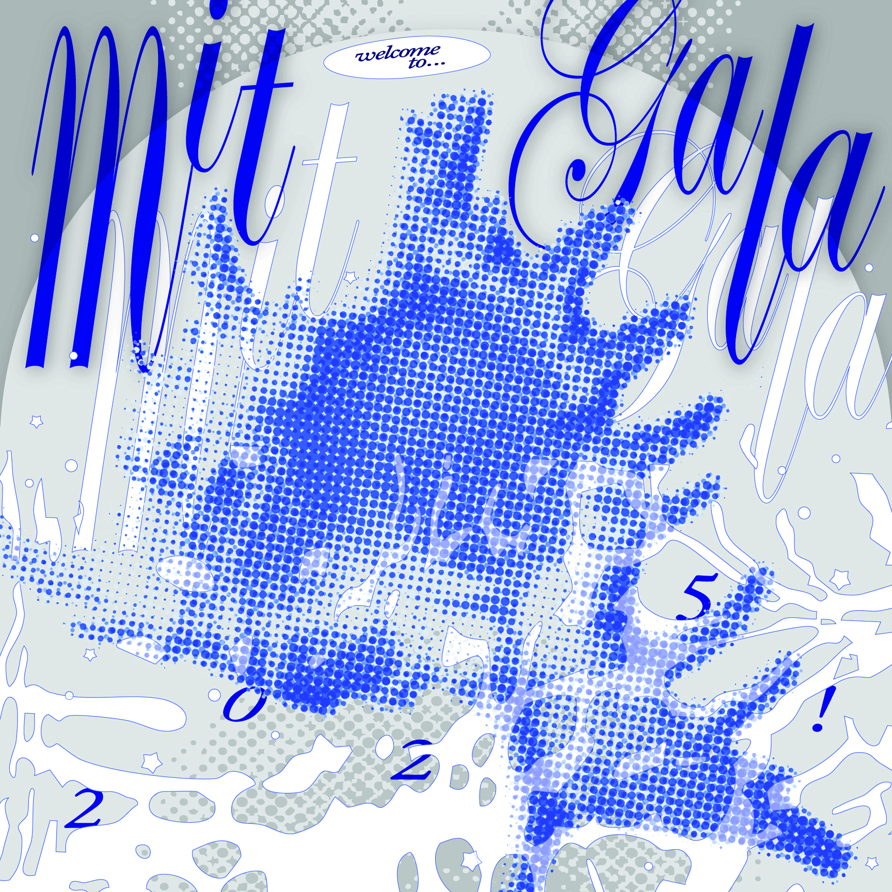
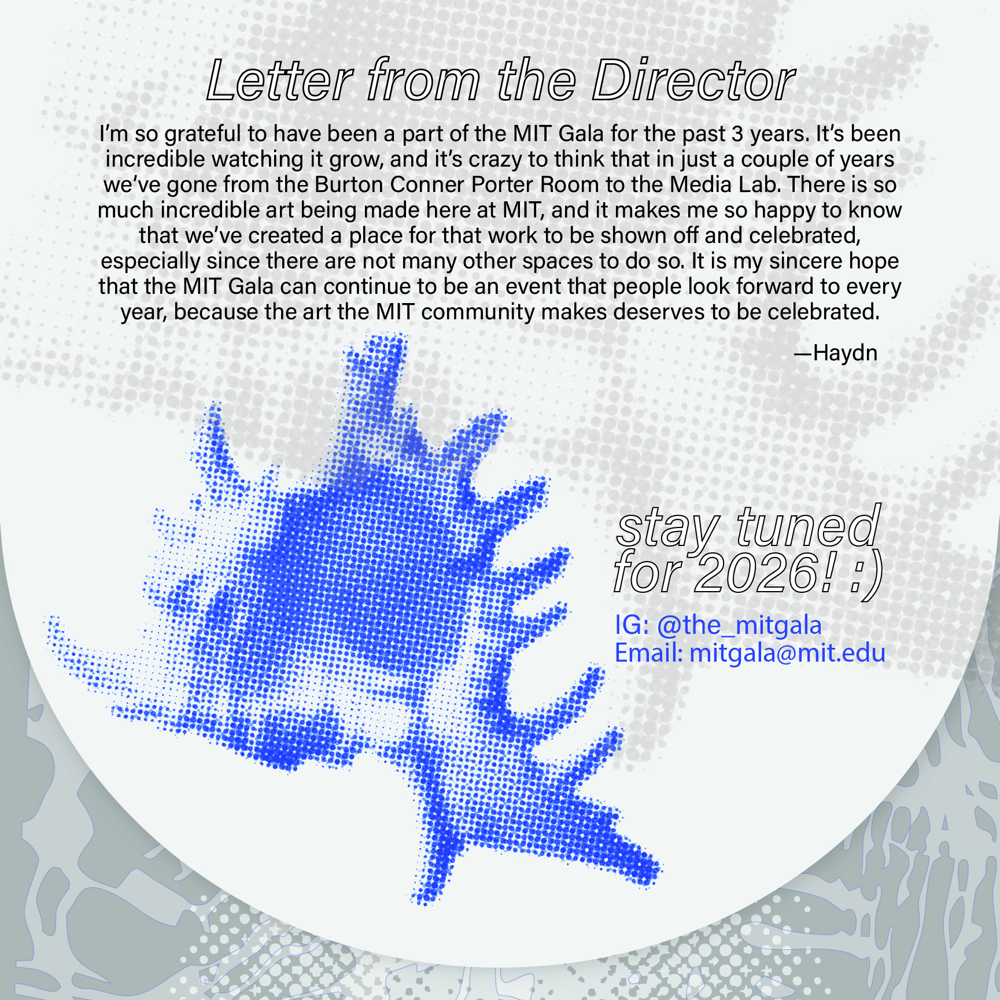


Finally, I got to work on the inner poster-like pages. Drawing from the theme of water and the event's maximalist aesthetic, I chose six different sea animals
and created a digital collage for each. I wanted each double-page spread in the program to consist of black and white information on one side and a
frenetic collage on the other, creating visual interest.
<-- examples
<-- examples
The final program came together as a 16-page 8"x8" booklet. Here it is in print!
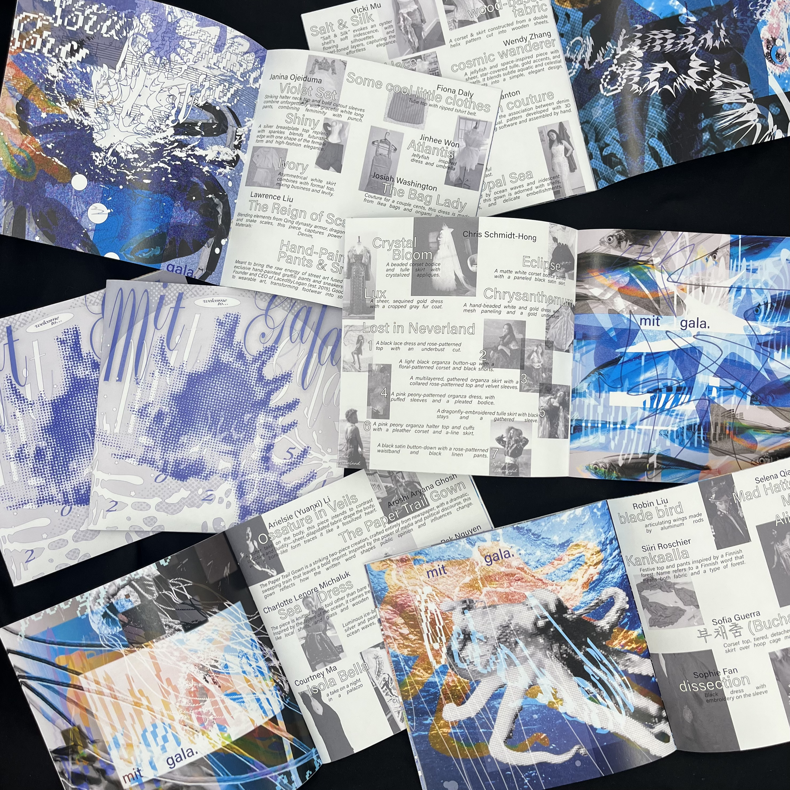
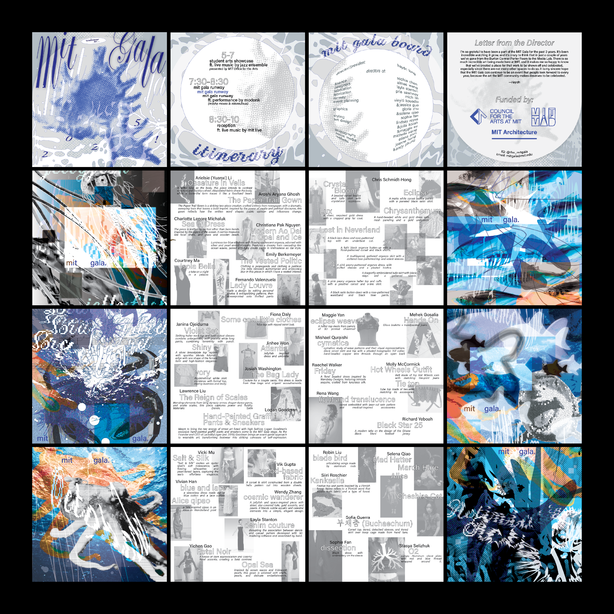
Design Prompt 2: Create a ticket design for the 2024 MIT Gala show, following the event theme of "TIME." Manufacture at least 200 of these tickets for distribution.
To start, I knew I wanted these tickets to have a unique physical shape in order to stand out.
After some initial sketching, I landed on a form in the shape of an hourglass (a very on-the-nose interpretation of the theme).
To tackle the manufacturing component, I wanted to use a laser cutter in order to rapidly cut out tens of tickets at once. This would also allow me to give the tickets internal cutouts, opening up several design possibilities.
To tackle the manufacturing component, I wanted to use a laser cutter in order to rapidly cut out tens of tickets at once. This would also allow me to give the tickets internal cutouts, opening up several design possibilities.
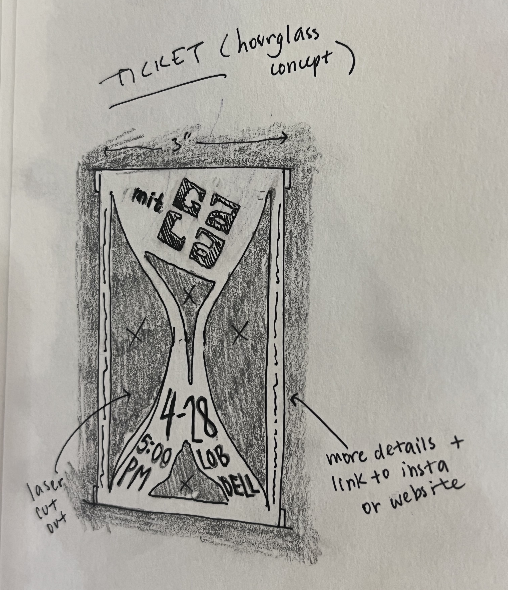
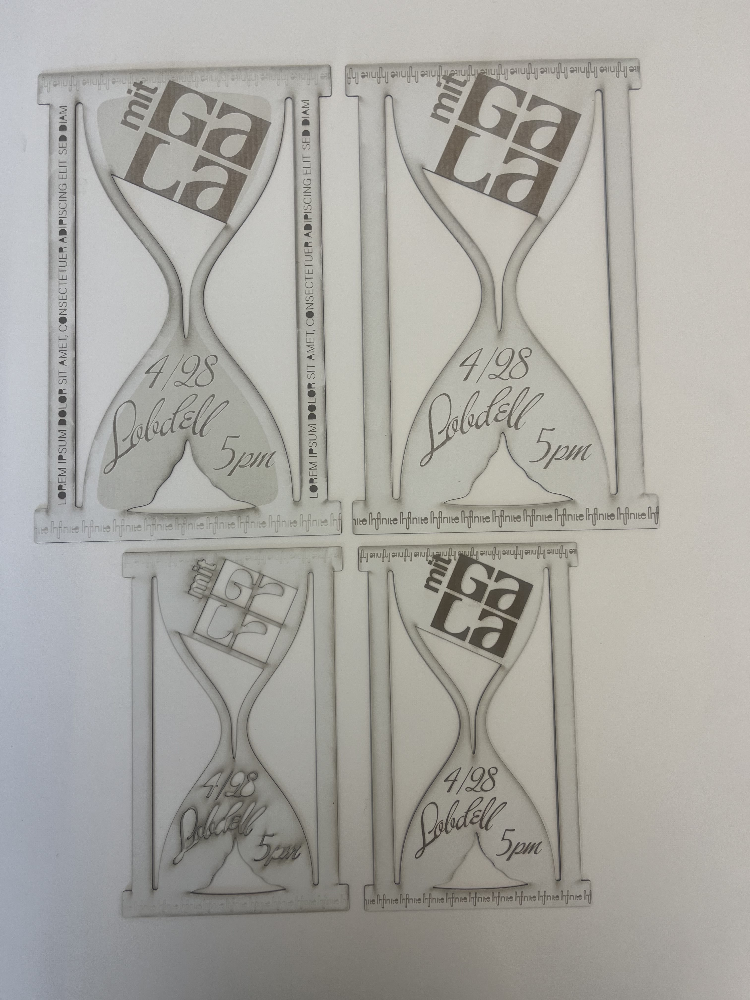
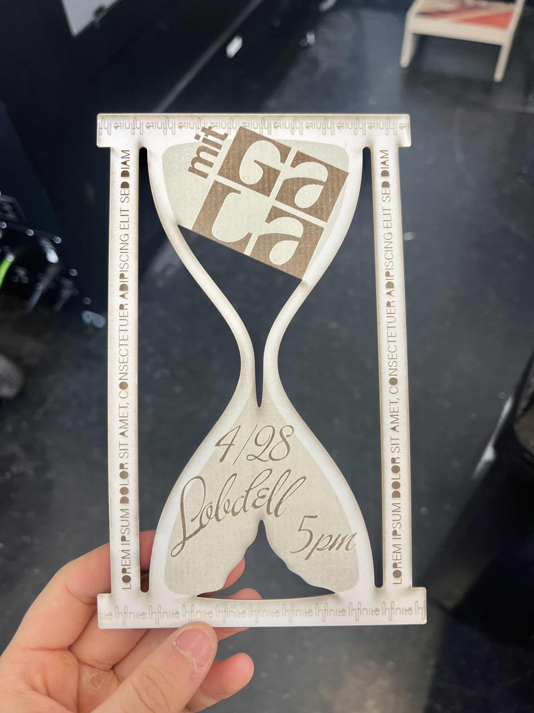
My first prototype engraved the relevant graphics onto a sheet of cardstock and then cut out the hourglass shape. However, this design had two issues:
b The engraving step took way too long — close to 15 minutes for a single ticket.
r The dusty brown aesthetic didn't really match the bold, graphic identity of the event.
To address these problems, I decided to investigate an alternative way of creating graphic forms: cutting out negative and positive layers of paper and gluing them on top of each other.
b The engraving step took way too long — close to 15 minutes for a single ticket.
r The dusty brown aesthetic didn't really match the bold, graphic identity of the event.
To address these problems, I decided to investigate an alternative way of creating graphic forms: cutting out negative and positive layers of paper and gluing them on top of each other.
After laying out several versions in Illustrator using this alternative approach, I landed on a final prototype that did the trick!
By eliminating the engraving step and making use of black and white graphic forms, I could more efficiently produce tickets that were also more visually striking.
In order to make the cut-out letters remain legible, I designed custom stencil letterforms. The final tickets are below, showing both the separate positives/negatives and the design legibility they form when layered together.
In order to make the cut-out letters remain legible, I designed custom stencil letterforms. The final tickets are below, showing both the separate positives/negatives and the design legibility they form when layered together.
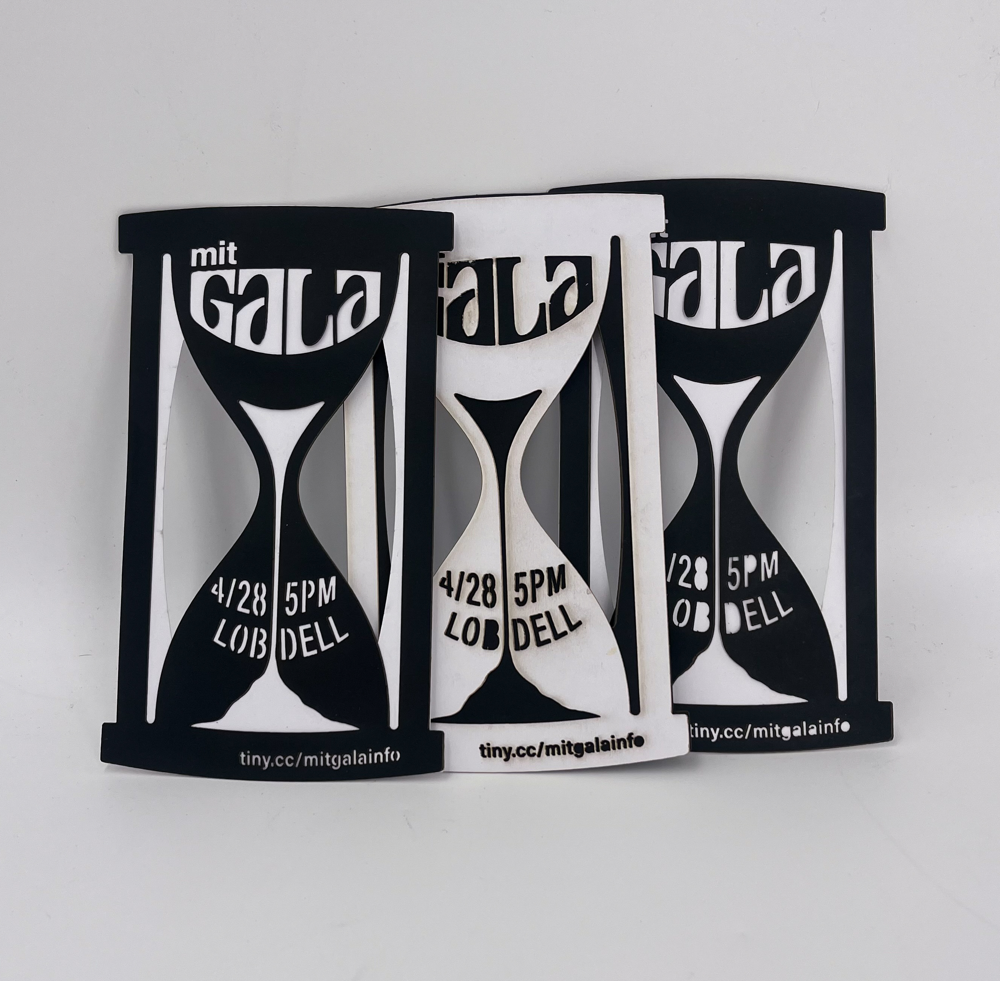
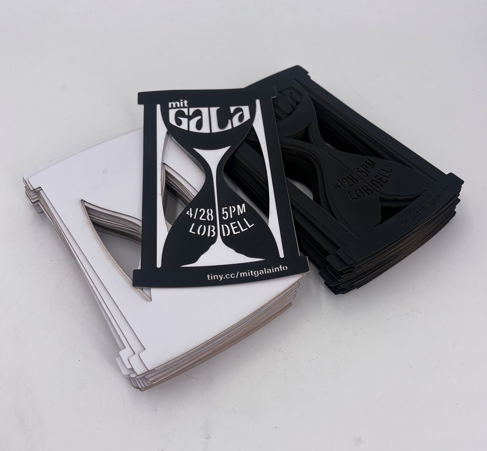